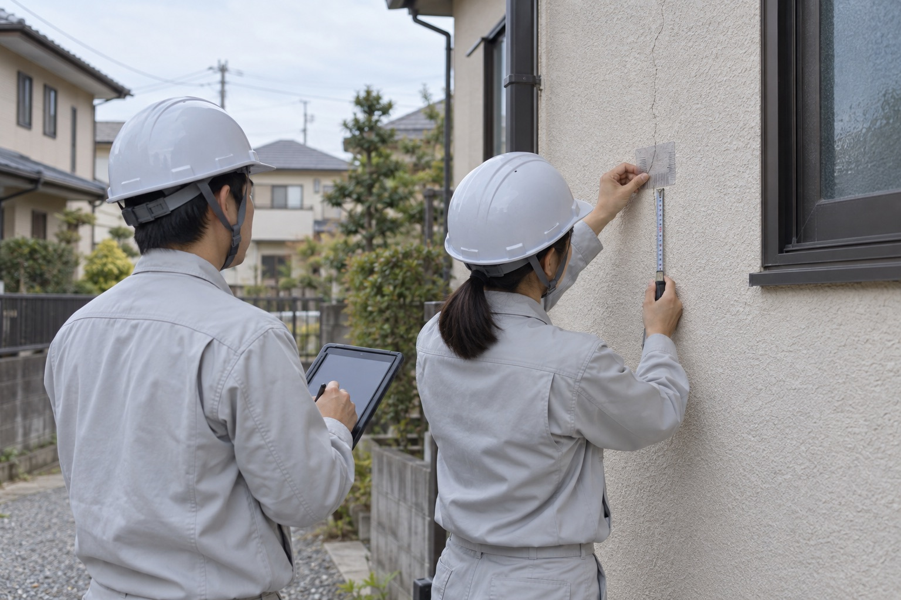

業務内容Service


Our Business
計画から用地、完成後の登記まで。
ひとつの会社で、切れ目なく。
恵進コンサルは、設計・測量・補償・調査・許認可・登記をひとつの会社で担う総合建設コンサルタントです。
計画から用地、完成後の登記まで、事業の各段階に切れ目なく対応します。
Field
設計から登記まで、
ひとつの会社で担います
業務の範囲
01
計画・設計・調査
- 道路・河川・橋梁・上下水道などの土木設計
- 地形・用地・路線・地積の測量
- 機械ボーリング・原位置試験などの地質調査
- 交通量調査・下水管渠調査
- 開発許認可申請書の作成
- 地図情報システム・各種台帳システムの作成
02
用地・補償・施工監理・登記
- 事業損失・物件調査・復旧積算（補償コンサルタント）
- 一般建築・公共建築の設計
- 土木・建築・廃棄物処理施設の施工監理
- 土地の分筆・合筆、建物の表示登記（土地家屋調査士事務所）
こうした業務を、登録4部門と14種の資格を持つ技術者で、社内一貫体制で担います。
発注者のよき技術的パートナーとして、「誠意・工夫・正確」を強く意識しながら取り組みます。
Flow
「設計する」だけではなく、
事業のすべての段階に寄り添います
1調査・測量

地形・用地・路線測量、地質調査、交通量調査など、事業の前提となる現況を現場で確かめます。
2設計・許認可

道路・河川・上下水道などの土木設計、建築設計、開発許認可申請を行います。
3用地・補償

用地測量・物件調査・事業損失の調査で、公共事業と地域の方々をつなぎます。
4施工監理

土木・建築・廃棄物処理施設の施工監理を行います。
5登記

併設の土地家屋調査士事務所が、土地の分筆・合筆、建物の表示登記までを担います。
Reasons
恵進コンサルが
選ばれる理由
Reason 01
「誠意・工夫・正確」を貫く技術的パートナー
発注者の立場で課題を整理し、工夫のある解決策を、正確な成果品で返す。創業以来変わらない、仕事の基準です。
Reason 02
登録4部門を、ひとつの窓口で
建設コンサルタント・補償コンサルタント・測量業・土地家屋調査士事務所。発注の手続きも、打ち合わせの相手も、ひとつで済みます。
Reason 03
現場で確かめてから、設計する
機械ボーリング、交通量調査、下水管渠調査。設計の前提となる地盤と現況を自社で測り、机上の想定で終わらせません。
Reason 04
用地と補償を、住民の目線で
家屋調査や補償の算定は、丁寧な説明と正確な記録で。公共事業と地域の方々のあいだに立つ仕事です。


Service
6つの業務
それぞれの業務の内容と、業務経歴（実績）へのリンクです。
CIVIL DESIGN
土木設計
計画を、図面のかたちにする。
道路、河川、橋梁、上下水道、宅地造成、鋼構造・コンクリート構造物。千葉市と近隣市町の公共事業を中心に、予備設計から実施設計までを担います。測量・地質調査・補償の結果を同じ社内で受け取れるため、前提条件のずれが少なく、手戻りの少ない設計ができます。
建設コンサルタント登録 建07-6992｜技術士2名・RCCM 2名
業務経歴を見るSURVEYING
測量
事業の土台となる、確かな数値を。
地形測量、用地測量、路線測量、地積測量、基準点測量。測量士7名・測量士補2名が、現場で確かめた数値を次の設計と用地の手続きへつなぎます。公共事業の出発点として、精度と記録の確かさを最優先にしています。
測量業者登録 (8)-17023｜測量士7名・測量士補2名
業務経歴を見るCOMPENSATION
補償コンサルタント
公共事業と、沿道の暮らしをつなぐ。
事業損失、物件調査、復旧積算。家屋の事前・事後調査、建物や工作物の算定など、公共事業に伴う補償の調査と算定を担います。丁寧な説明と正確な記録で、発注者と地域の方々の双方に向き合います。
補償コンサルタント登録 補05第3499
業務経歴を見るGEOTECHNICAL & SURVEY
地質調査・調査業務
設計の前提を、現場で確かめる。
機械ボーリング、原位置試験などの地質調査に加え、交通量調査、下水管渠調査などの現況調査を行います。地盤と現況のデータを社内の設計へ直接渡せることが、調査から設計まで一社で担う強みです。
設計部門と同じ社内で、調査結果をそのまま設計へ
業務経歴を見る
PERMITS & GIS
許認可申請・地図情報
手続きと情報整備で、事業を前に進める。
開発許認可申請書の作成をはじめ、各種事業の許認可申請を支援します。あわせて、地図情報システムの開発、デジタル地図の入力、各種台帳システムの作成など、自治体の情報整備を担います。
設計・測量と並行して進めることで、手続きの待ち時間を短縮
業務経歴を見るARCHITECTURE & REGISTRATION
建築設計・施工監理・登記
完成後の登記まで、一社で。
一般建築・公共建築の設計と、土木・建築・廃棄物処理施設の施工監理を行います。併設の土地家屋調査士事務所が、土地の分筆・合筆、建物の表示登記までを担い、事業の最後の手続きまで切れ目なく対応します。
土地家屋調査士事務所 千葉第2201｜一級土木施工管理技士2名